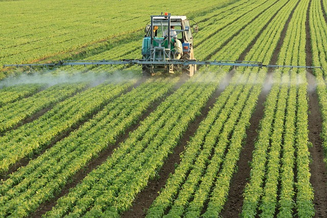
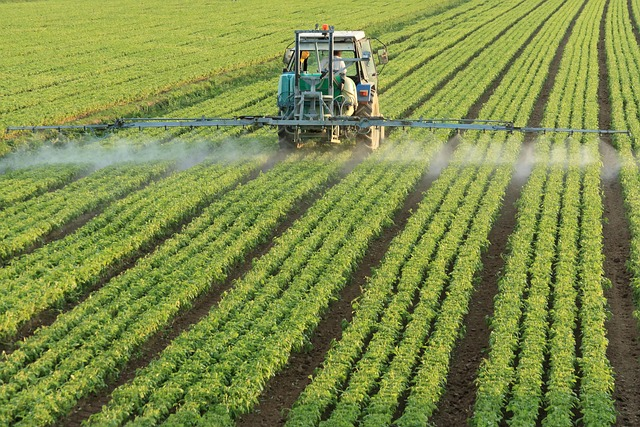

Farming Region One - Eastern Highlands
Annual Rainfall: 1000mm - 2000mm
Region One covers the Eastern Highlands of Zimbabwe, including areas like Nyanga, Chimanimani, and Chipinge. This region receives the highest rainfall in the country and has cooler temperatures, making it ideal for horticulture, tea, coffee, and deciduous fruits.
Farmers in this region benefit from abundant water sources, allowing irrigation and intensive crop production. However, the terrain is mountainous, requiring contour farming and soil conservation techniques.
Region 1 Crop Category Guide:
Support Services:
Extension services are available through ADSS AI ChatBot.